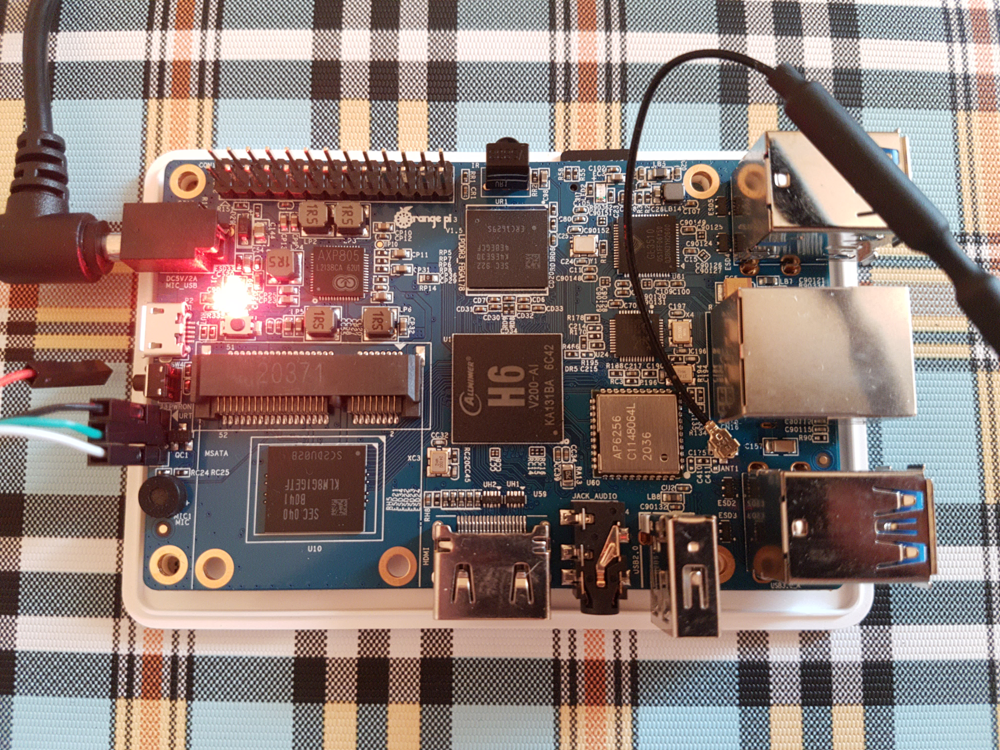

Xunlong Orange Pi 3 (xunlong-orangepi3)
|
 Orange Pi 3 with UART connected | |
| Manufacturer | Xunlong |
|---|---|
| Name | Orange Pi 3 |
| Codename | xunlong-orangepi3 |
| Released | 2019 |
| Category | testing |
| Original software | BSP |
| Original version | Linux 4.9 |
| postmarketOS kernel | Mainline |
| Hardware | |
| Chipset | Allwinner H6 |
| CPU | 4x 1.8 GHz ARM Cortex-A53 |
| GPU | Mali T720 MP2 600 MHz |
| Display | HDMI port,CVBS out via 3.5mm jack |
| Storage | 8 GB eMMC (or empty slot) + microSD |
| Memory | 1/2 GiB |
| Architecture | aarch64 |
| Type | Single Board Computer |
| Unixbench Whet/Dhry score | 1646.7 |
{kind=link}
| USB Networking |
Unavailable
|
|---|---|
| Flashing |
Unavailable
|
| Touchscreen |
Unavailable
|
| Display |
Partial
|
| WiFi |
Works
|
| FDE |
Works
|
| Mainline |
Works
|
| Battery |
Unavailable
|
| 3D Acceleration |
Works
|
| Audio |
Partial
|
| Bluetooth |
Works
|
| Camera |
Unavailable
|
| GPS |
Unavailable
|
| Mobile data |
Unavailable
|
| SMS |
Unavailable
|
| Calls |
Unavailable
|
| USB OTG / USB-C Role switching |
Unavailable
|
| NFC |
Unavailable
|
| Accelerometer |
Unavailable
|
|---|---|
| Magnetometer | |
| Ambient Light | |
| Proximity | |
| Hall Effect | |
| Barometer | |
| Power Sensor | |
| Camera Flash |
Unavailable
|
|---|---|
| Keyboard |
Unavailable
|
| Touchpad |
Unavailable
|
| USB-A |
Works
|
| HDMI/DP |
Works
|
| Ir TX |
Unavailable
|
| Ir RX |
Broken
|
| Stylus | |
| Haptics | |
| Ethernet |
Works
|
| FOSS bootloader |
Works
|
| Primary Bootloader |
Works
|
|---|---|
| Secondary Bootloader |
Unavailable
|
| Mainline |
Works
|
| Internal Storage |
Works
|
| SD card |
Works
|
| USB Host | |
| USB Peripheral | |
| Display |
Broken
|
| Keyboard |
Broken
|
| Buttons |
Unavailable
|
Contributors
Maintainer(s)
Users owning this device
Installation
Follow the Installation guide, use sdcard method. Then insert microSD into TF-card slot and plug the power cable, pmOS should boot. If not, try once again (on cold boot SPL sometimes decides there is 4096 MiB of RAM and boot hangs).
To install to eMMC, flash ondev to SD or run pmbootstrap from present pmOS installation on SD.
Serial console
See linux-sunxi wiki page, connect your USB-UART adapter's RX to board's TX and vice versa.
OTG
As said in board's DTS,
/*
* This board doesn't have a controllable VBUS even though it
* does have an ID pin. Using it as anything but a USB host is
* unsafe.
*/
So you can't connect it to a PC via microUSB to transfer data, it will only gain charge. But there is 5 standard USB ports that can be used to connect any devices.
Audio
Hardware codec isn't supported in Linux kernel yet, so audio jack output won't work. However, HDMI audio works.
Ethernet
Works after aports!45403.
Mini PCIe
The Mini PCIE had provided one usb bus and one pcie x1 bus. The usb bus work but the pcie bus doesn't work, and likely won't ever. See linux-sunxi wiki for details so the only mini pcie card going to work with it is card that use the uab 2.0(like some of the 1g/2g/3g/4g modem).
GPIO
Untested, but seems to work.
CVBS
Untested, but seems not to work.
Ir Rx
Not working (needs kernel config adjustment).
See also
- linux-sunxi wiki page
- Offical wiki page
- Blogpost about porting efforts
- The source code of the stock uboot
- Instruction for gpio from linux-sunxi
- pmaports!2268 Initial merge request
Screenshots
xfce4 on Orange Pi 3
{kind=link}
{kind=link}